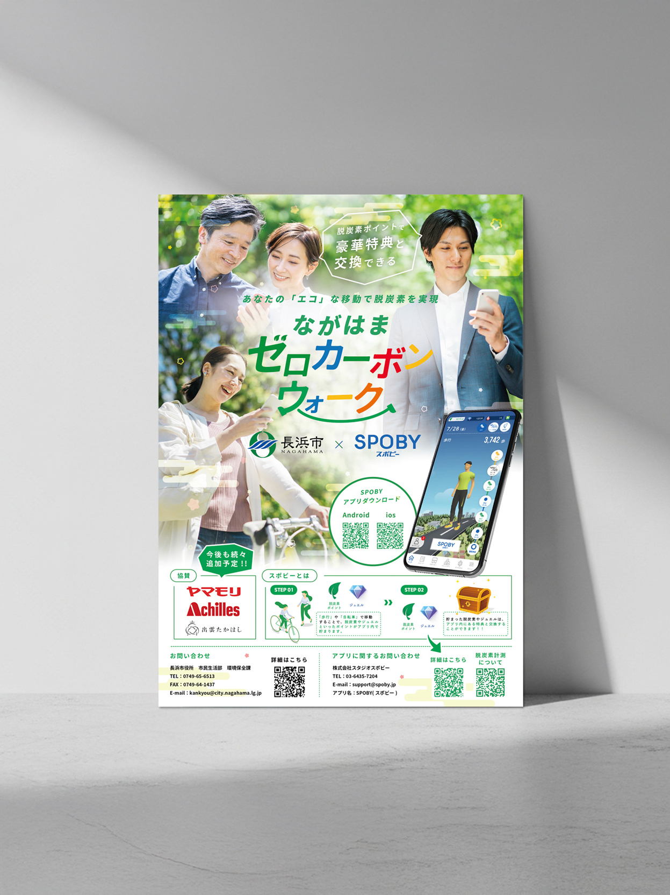
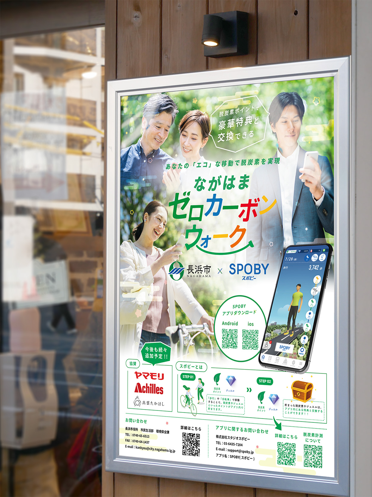
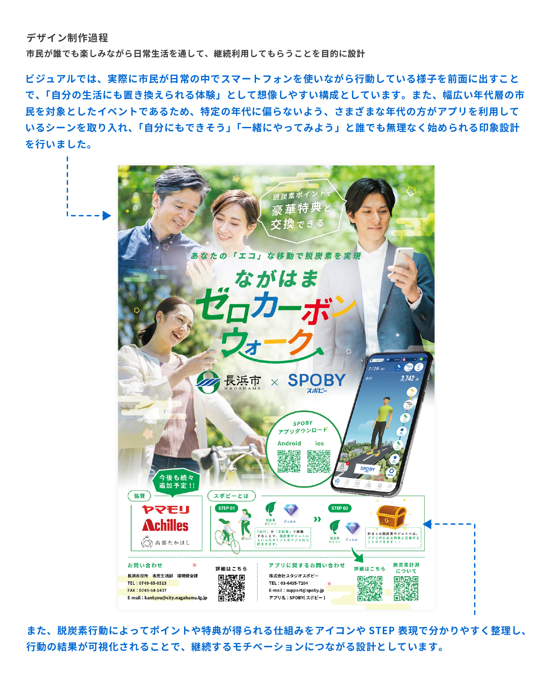

制作物名
制作背景・意図
長浜市×SPOBY ながはまゼロカーボンウォーク
- 制作条件・概要
-
-
誰に向けたものか
長浜市に在住する市民、特に、日常的に電車や自動車で移動する機会の多い30代〜50代を主な対象
-
何を伝えるものか
「SPOBY（スポビー）」を活用した脱炭素・健康増進の取り組み「ながはまゼロカーボンウォーク」の実施にあたり、市民に向けての取り組み内容をわかりやすく伝え、アプリダウンロードと参加を促進するためのイベント導入用ポスター
-
どこで使われるか
長浜市役所および/長浜市内に掲載
-
誰に向けたものか
- 背景・課題
-
-
日常生活において、自動車や電車移動が中心となり、脱炭素・健康行動が意識されにくい状況がありました。また、個人単位での取り組みでは、行動の成果や効果を実感しづらく、継続につながりにくいという課題もありました。
-
- 制作目的
-
-
長浜市とSPOBYの連携事業である「ながはまゼロカーボンウォーク」イベントを軸に、長浜市民にSPOBYアプリをダウンロードしてもらい、日々の脱炭素・健康行動をアプリで可視化することで、楽しみながら継続利用してもらうための周知・参加促進ポスターを制作いたしました。また、単なる環境啓発に留まらず、「アプリを通じて行動することでリワードが得られる」というゲーム感覚の体験を伝えることで、環境配慮行動に対する心理的ハードルを下げ、誰でも気軽に参加・継続できることを狙いとしています。
-